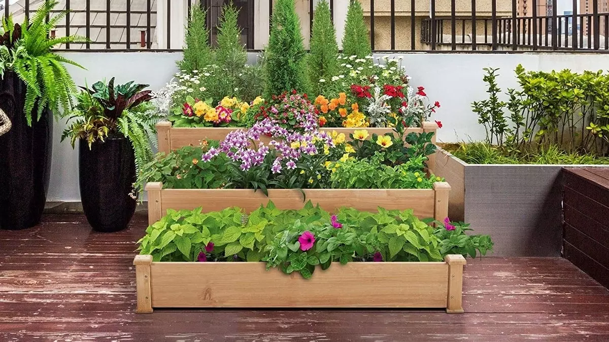
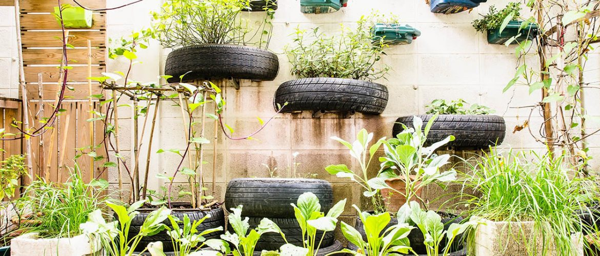

Aquí encontrarás la forma más fácil de hacer un huerto


Cultivar en Casa
Cultivar un huerto en casa puede ser más fácil de lo que tal vez habrías imaginado
Tener un huerto en casa podría ser el primer gran paso para cambiar tu estilo de vida hacia uno más
sano, responsable y ecológico. De hecho, los huertos en casa tienen múltiples beneficios: lograr una
dieta saludable y a mejor precio; mayor entendimiento sobre los procesos de la naturaleza; tener
alimentos durante todo el año; conocer el proceso de cultivo y la calidad de lo que comes; contar
con la posibilidad de mejorar los ingresos; además eres consciente de que los alimentos que estás
consumiendo no tienen pesticidas, lo que ayuda enormemente a tu salud.